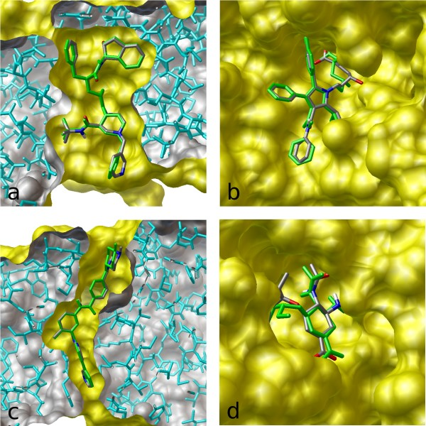
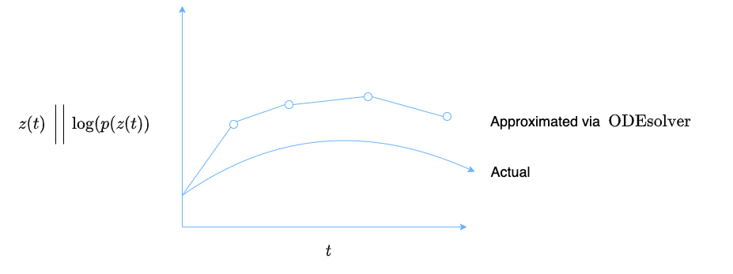
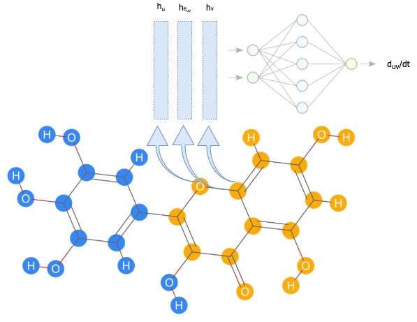
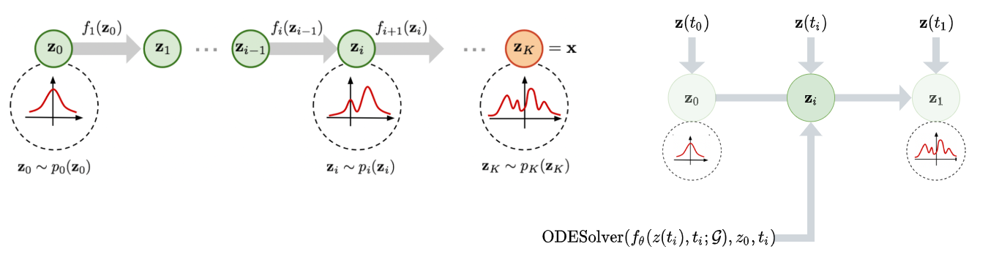
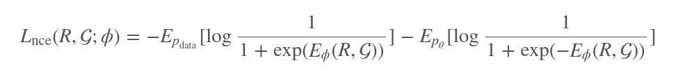
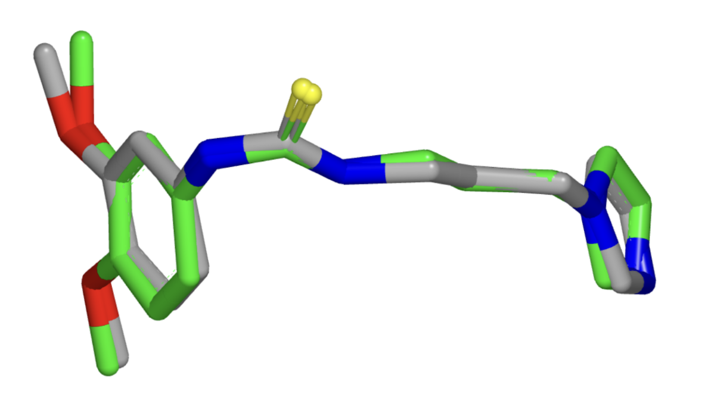

Generating Molecular Conformations via Normalizing Flows and Neural ODEs
ICLR 2022 Blog Track
This post was an accepted submission from MSAIL to the ICLR 2022 Blog Track. You can find the original post here.
In this post, we provide an in-depth overview of methods outlined in the paper “Learning Neural Generative Dynamics for Molecular Conformation Generation,” discuss the impact of the work in the context of other conformation generation approaches, and additionally discuss future potential applications to improve the diversity and stability of generated conformations.
- Introduction
- An Overview of the Deep Generative Approach
- Modeling distributions of distances
- Modeling distributions of conformations
- Sampling
- Future Work
- References
Introduction
In drug discovery, generating molecular conformations is useful across a variety of applications. For example, docking of various molecular 3D conformations to a specific protein allows drug hunters to decide whether a small molecule binds to a specific pocket in a multitude of conformations or a select few.
 Figure 1: Autodock Vina is a computer program that takes a given 3D conformation of a molecule and protein and predicts the binding free energy. An algorithm like the one discussed in this blog could generate a wide variety of conformations for Autodock Vina to test. (Source)
It may be helpful to define what we mean when we talk about conformations, whether we are talking about a small organic molecule or a macromolecule like a protein. We start off with a graph, with atoms as nodes connected by bonds as edges that represent intramolecular interactions. In essence, we are starting with a specified connectivity defining how atoms are connected to each other. This two-dimensional representation, however, doesn’t capture the three-dimensional coordinates of the atoms and how they are spatially arranged.
Therefore, in theory, one molecular graph could capture an astronomical number of conformations capturing all possible permutations and combinations of spatial arrangements of atoms. However, not all of these possible spatial arrangements are relevant as some may be so unstable that they may not occur. The spatial proximity of bulky organic groups – more formally known as “steric clashing” – reduces the number of degrees of freedom when it comes down to which bonds can rotate and how much they can rotate. Therefore, we are only interested in conformations that fall in stable low energy minima.
Levinthal’s Paradox is a principle stating that if a protein were to sample all of its possible molecular conformations before arriving in its native state, it would take longer than the age of the universe. Though it may seem excessive to directly extend this analogy to small molecules, which are orders of magnitude less complex than proteins, it becomes intuitive that computationally simulating all of the possible conformations for a large molecule with a large number of rotatable bonds is highly infeasible. For every single bond and the associated substituents, if there are three stable conformations, then there is a maximum bound of $3^n$ stable conformations for a molecule with $n$ bonds. For example, a molecule with ten rotatable bonds could have a maximum of 59,049 conformations. Now, we’ve arrived at the question that drives this blog post and the work that we’re about to discuss: Given a molecular graph and its associated connectivity constraints, can we generate a set of low energy stable molecular conformations (a multimodal distribution) that capture the relative spatial positions of atoms in three-dimensional space? There are two subtle components to the question above that address some deficiencies in prior attempts to solve this problem:
-
A multimodal distribution – there are multiple low energy minima when it comes to the joint distribution of distances between atoms that defines a conformation. In approaches where distances between pairs of atoms or 3D coordinates are randomly sampled to construct a conformation, dependencies and correlations between atomic spatial positions are not captured and the corresponding joint distribution is inaccurate.
-
Relative spatial positions – some approaches use graph neural networks directly on molecular graphs to compute representations for the individual nodes (atoms). These nodes can be further fed into other feedforward networks to predict the 3D coordinates of the atoms in a specified conformation. However, directly predicting the 3D coordinates does not capture the idea that a conformation is defined by the relative spatial arrangement and distances between atoms in 3D space. Put another way, if a rotation or translation transformation was applied to the 3D coordinates, the model should not classify that as an entirely different conformation (rotation/translation invariance is not captured). Distances, rather than 3D coordinates could also be predicted; however (mirroring the bullet point above), since distances are predicted independently of each other, there could only be one predicted conformational mode.
An Overview of the Deep Generative Approach
In “Learning Neural Generative Dynamics for Molecular Conformation Generation,” Xu et. al approach the above deficiencies, generating low energy conformations while modeling dependencies between atoms.
Let’s keep in mind – the final goal is to optimize a set of parameters $\theta$ to predict the likelihood of a conformation $R$ given a graph $G$. (i.e. to find $ p_\theta(R|G) $).
To model this distribution, it is necessary to model intermediate distributions and marginalize over one of the variables:
-
We also need to find $p_\theta(d|G)$ (the distribution of distances $d_{uv}$ between pairs of atoms $u$ and $v$ in the graph).
-
Finally, we need to find $p_\theta(\boldsymbol{R}|d,G)$ – the probability of a conformation (specified by a set of 3D coordinates given a set of intramolecular distances and an underlying graph).
With these two distributions, we can find our intended distribution by integrating over the possible distances.
$$\int{p(\boldsymbol{R}|d,G)*p(d|G)dd}$$
Let’s walk through the approaches to modeling each of these individual distributions.
Modeling Distributions of Distances
In this approach, the distribution of distances given a graph is modeled using a continuous normalizing flow. To understand this approach, we need to define its sub-techniques and understand how they interact with each other.
-
Normalizing flows: We initially sample $z_0$ from a starting distribution $p(z_0)$ and a series of invertible transformations transform the initial density function. Here’s a strong primer on flows.
- In this work, $z(t)$ represents our distances between pairs of atoms $d(t)$. The initial distances are pulled from a normal distribution with mean zero and variance one (for all distances). Correspondingly, the initial probability density function $p(z_0)$ is represented by the initial distribution of distances $N(0, \mathbf{I})$.
-
Neural ODE systems: In a neural ODE, we specify an initial value problem that uses a neural network to specify the “dynamics” of the system (or the derivative of the “state” with respect to time). More concretely, we have that $y(0) = y_0$ and that $\frac{dy}{dt} = f(y(t), t, \theta)$. Using an ODE solver such as
odeint, we can calculate the value of $y$ at any time $t$ as in any initial value problem.
In fact, y can be thought of as a residual network where we take the limit with respect to the number of layers.- Correspondingly, in this work, the purpose of instantiating an ODE is to be able to predict $d(t)$ – the distances between each pair of atoms at any time point. $\frac{d\mathbf{d}}{dt}$ can be predicted at any time point given $d(t)$, the time point, $t$, the molecular graph, and the parameters of the assigned neural network (in our case an MPNN).
$$\boldsymbol{d} = F_\theta(\boldsymbol{d}(t_0), \mathcal{G}) = \boldsymbol{d}(t_0) + \int_{t_0}^{t_1} f_\theta(\boldsymbol{d}(t), t; \mathcal{G})dt$$
To combine the two methods above: We take $z_0$ and define it as the initial value. $\frac{dz}{dt}$ is calculated using a neural network that takes in $z(t)$, $t$, and $\theta$. With $z_0$ and a function $f$ to calculate $\frac{dz}{dt}$ at any time point, $z(t)$ can be calculated as per the traditional initial value problem formulation. The ODESolver also predicts the $\textrm{log}(p(z(t))$ at any time point, thereby encoding the density function for $z(t)$ in addition to just the values of $z(t)$ alone (Figure 2).
 Figure 2: The neural ODE system computes $\boldsymbol{d}(t)$ and $\textrm{log}(p(\boldsymbol{d}(t))$ at various time points in order to try and approximate the actual functions for $\boldsymbol{d}(t)$ and $\textrm{log}(p(\boldsymbol{d}(t))$.
In this case, our $z(t)$ is $\boldsymbol{d}(t)$, a function that outputs a vector with pairwise intramolecular distances. The “continuous-time dynamics" is a function that takes in neural network parameters, the time, and the current state to output the derivative of the distances with respect to time. The neural network is a graph message passing neural network (MPNN) that calculates node and edge representations and aggregates the node and edge representations for each bond to calculate $\frac{dd_{uv}}{dt}$ – the change of the distance between two atoms with respect to time (Figure 3).
 Figure 3: First, the individual nodes and edges are embedded using feedforward networks and sent through message passing layers. For every single bond, the final embeddings for the edge and atoms on each (atoms $u$ and $v$) end are concatenated and sent into a final feedforward network to result in a prediction for $\frac{dd_{uv}}{dt}$.
At a higher level, by combining normalizing flows (Figure 4a) with an ODE system, the authors intended to effectively create a normalizing flow with an infinite number of transformations (in the limit) that can therefore model very long-range dependencies between atoms in all the transformations that occur from time $t_0$ to $t_1$ (Figure 4b).
 Figure 4a (Left): Traditional normalizing flow. Figure 4b (Right): Continuous normalizing flow with $z(t)$ as $d(t)$.
Modeling Distributions of Conformations
After the distances are sampled and predicted based on the graph, the conformations can be sampled so as to minimize the difference between the a priori distances generated by the continuous graph normalizing flow (CGNF) and the pairwise distances in the sampled conformation.
$$p(\boldsymbol{R}|d, \mathcal{G}) = \frac{1}{Z}\textrm{exp}{-\sum_{e_{uv}\in{\mathcal{E}}} a_{uv}(\lVert r_u - r_v \rVert_2 - d_{uv})^2}$$
The euclidean norm of the difference between the position vectors represents the distance between two atoms in a sampled conformation ($\lVert r_u - r_v \rVert_2$). The distance associated with the edge between atoms u and v from the distribution modeled using the CGNF is ($d_{uv}$). The lower the difference between these two values, the higher the numerator. The higher the numerator, the higher the probability of the conformation given the proposed distances and molecular graph.
In the way that LeCun et. al initially describe energy-based models, they describe the energy-based function $E(X, Y)$ to calculate the “goodness” or the “badness” of the possible configurations of $X$ and $Y$ or the “degree of compatibility” between the values of $X$ and $Y$. The same idea can be applied when considering the meaning of the energy function taking in a molecular conformation and a graph as input.
The loss function with which the energy-based model (EBM) is optimized provides additional insight into how it helps guide the generation of conformations.

Here, $p_{data}$ and $p_{\theta}$ are two different distributions that generate distances between pairs of atoms. $p_{data}$ pulls from vectors of true distances between atoms in actual conformations, while $p_{\theta}$ pulls from vectors of generated distances from the continuous flow. Therefore, the conformations represented in the second term on the right-hand side of this equation are noisier than the conformations represented in the first term. By being trained against this objective function, the model learns to distinguish real conformations based on true distances from unreal noisy conformations.
Sampling
Conformations are sampled by pulling an initial vector of distances from a normal distribution, passing it through the continuous graph normalizing flow, and finding an initial conformation $R_0$ that minimizes the energy. Then, conformations are sampled using two steps of stochastic gradient Langevin Dynamics. As in traditional stochastic gradient descent, we subtract the gradient of a secondary energy function that uses both the initial EBM parameters and CGNF parameters from the coordinates from the prior iteration. The “Langevin” part of this stochastic gradient descent implies there is a noise term ($w$) added, the variance of which is equal to the square root of the step size ($\epsilon$). This noise term, and Langevin dynamics more generally, are inspired by modeling Brownian motion in particles and have been repurposed for sampling in molecular dynamics.
The secondary function takes into account both the initial energy function and the $\textrm{log}(p(\boldsymbol{R}|\mathcal{G}))$. Minimizing $E_{\theta, \phi}(R|\mathcal{G})$ involves $E_{\phi}(R|\mathcal{G})$ and simultaneously minimizing $p(\boldsymbol{R}|\mathcal{G})$.
$$R_k = R_{k-1} - \frac{\epsilon}{2}\nabla_RE_{\theta, \phi}(R|\mathcal{G}) + \sqrt{\epsilon}\omega, \omega \sim \mathcal{N}(0, \mathcal{I})$$
Future Work
One could explore different variations on the approach used to compute the continuous-time dynamic – for example, large-scale pretrained transformers applied on SMILES strings – to compare how different architectures that are also able to capture long-range dependencies between atoms perform in generating distance distributions and subsequently conformations. Similar to the way that message passing allows for encoding of long-range dependencies, attention also allows for the same. In fact, attention applied to protein sequences has been shown to recover high-level elements of a three-dimensional structural organization; attention weights are a well-calibrated estimator of the probability that two amino acids are in contact in three-dimensional space (Vig et. al).
One caveat to note concerning the idea above is many models pretrained on protein sequences include evolutionary information regarding the sequences through featurizations such as multiple sequence alignments ( MSA) and position-specific scoring matrices ( PSSM) (Rao et. al). There are currently no featurizations for small molecules that encode their “structural evolution.”
One could also verify the ability of the different molecular conformation generation methods to generate more stable conformations. Towards the end of the paper, the authors proposed that the EBM shifts generation towards more stable conformations. Developing a metric or computational experiment – for example, calculating the free energy of generated molecules – would verify if this is the case. Or we could potentially even ask the question – is there an architectural or algorithmic knob that we could turn to control the tradeoff the algorithm makes between choosing conformational stability over diversity? To evaluate the model’s ability to especially generate low energy stable conformations, one could re-calculate all metrics solely across reference conformations for molecules bound to a protein in the protein data bank (PDB) (Figure 5) or Cambridge Structural Database (CSD) in a solid-state crystal structure.
 Figure 5: Example of conformational variability for a single PDB ligand between different protein structures (Source: Hawkins et. al).
Finally, Hawkins et. al make the distinction between systematic methods and stochastic methods for molecular conformation generation. Systematic methods involve a deterministic brute force search through all possible pairwise distances and torsion angles while stochastic methods involve random sampling and are not deterministic. Rather, in stochastic methods, the final generated conformation is in part determined by some initially sampled random variable). Under these definitions, the current method proposed in this work is stochastic, as the generated conformations are a function of the initial $d(t_0)$’s sampled from a normal distribution.
For stochastic approaches to finding multiple local minima, it is necessary to have multiple “starts” in order to cover all local minima. To evaluate the efficiency of the approach, one could measure the number of starts it takes to get a certain threshold of coverage over significant low-energy conformations.
All in all, the approach that Xu et. al employ to generate 3D conformers from a 2D molecular graph is part of a recent frontier in research that involves fewer brute-force physical simulations and more convenient ML-guided predictions that can help accelerate drug discovery.
References
-
Chen, R. T. Q., Rubanova, Y., Bettencourt, J., & Duvenaud, D. (2019). Neural Ordinary Differential Equations. arXiv [cs.LG]. Opgehaal van http://arxiv.org/abs/1806.07366
-
Hawkins, P. C. D. (2017). Conformation Generation: The State of the Art. Journal of Chemical Information and Modeling, 57(8), 1747–1756. doi:10.1021/acs.jcim.7b00221
-
Madani, A., Krause, B., Greene, E. R., Subramanian, S., Mohr, B. P., Holton, J. M., … Naik, N. (2021). Deep neural language modeling enables functional protein generation across families. bioRxiv. doi:10.1101/2021.07.18.452833
-
Rao, R., Bhattacharya, N., Thomas, N., Duan, Y., Chen, X., Canny, J., … Song, Y. S. (2019). Evaluating Protein Transfer Learning with TAPE. arXiv [cs.LG]. Opgehaal van http://arxiv.org/abs/1906.08230
-
Vig, J., Madani, A., Varshney, L. R., Xiong, C., Socher, R., & Rajani, N. F. (2020). BERTology Meets Biology: Interpreting Attention in Protein Language Models. bioRxiv. doi:10.1101/2020.06.26.174417
-
Weng, L. (2018). Flow-based Deep Generative Models. lilianweng. github. io/lil-log. Opgehaal van http://lilianweng.github.io/lil-log/2018/10/13/flow-based-deep-generative-models.html
-
Xu, M., Luo, S., Bengio, Y., Peng, J., & Tang, J. (2021). Learning Neural Generative Dynamics for Molecular Conformation Generation. arXiv [cs.LG]. Opgehaal van http://arxiv.org/abs/2102.10240
-
Yann LeCun, Sumit Chopra, Raia Hadsell, M Ranzato, and F Huang. A tutorial on energy-based learning. Predicting structured data, 1(0), 2006.